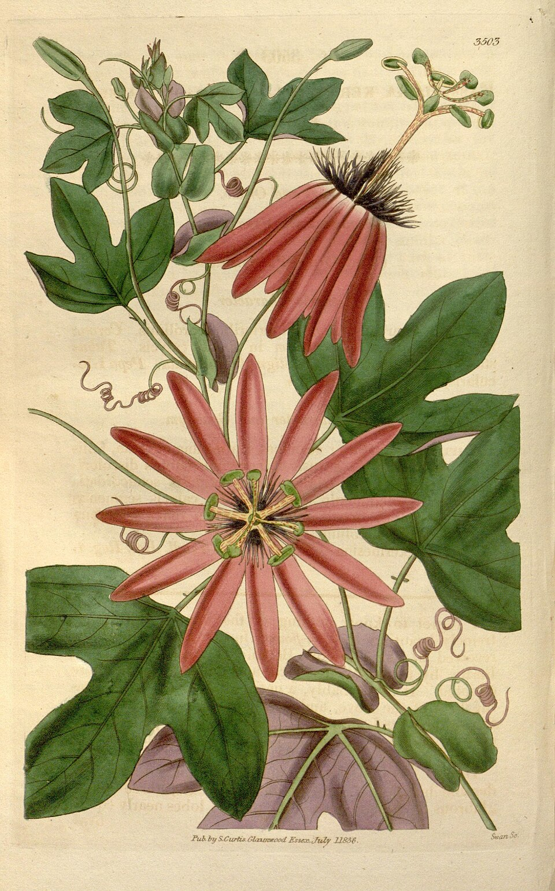

I'm Surya — AI Engineer & Data Scientist. I build applied AI end-to-end, from ambiguous problem to something running in production. Currently: LLM pipelines and hybrid retrieval at Neoware. On the side: small apps that keep track of life, so you don't have to.
← everything here shipped, nothing here is a mockupYou talk, it transcribes and finds the patterns in your life — mood, themes, threads across entries. A thoughtful archivist for your memories, running on Gemini, private on your device.
Say what you ate, get calories and macros back. Voice-first logging, AI health insights, an installable app that keeps your data on your device.
Reads your bank SMS and categorizes spending automatically — payee memory that learns your UPI contacts, income/expense detection, five real-world parsing edge cases handled. Full Compose UI: transaction list, dashboard, categorization, analytics. Tested.
Hybrid retrieval systems, production LLM work. Plus the three specimens above, built on nights and weekends.
CrewAI system — researcher, analyst, compiler agents. 5× faster reports, 40% less manual validation.
BM25 + vector + cross-encoder rerank. >95% Q&A accuracy, MLflow-tracked, CI-gated eval.
YOLOv8 + OpenCV on live manufacturing streams. Low latency, real factory floor.
BE Electronics & Telecommunication before that. Co-author, paper on knowledge-graph-augmented retrieval (under review).
reddysurya2016@gmail.com · LinkedIn · X · GitHub
Set in Fraunces & Caveat on a single HTML page. No frameworks, no trackers, no cortisol.
Paintings: G. Courbet, The Calm Sea (1869), J. M. W. Turner, Lake of Zug & F. E. Church, The Aegean Sea (c. 1877) via The Met Open Access; river landscape from the keeper's own collection; botanical plate via Wikimedia Commons.
Prototype — painted in one sitting.